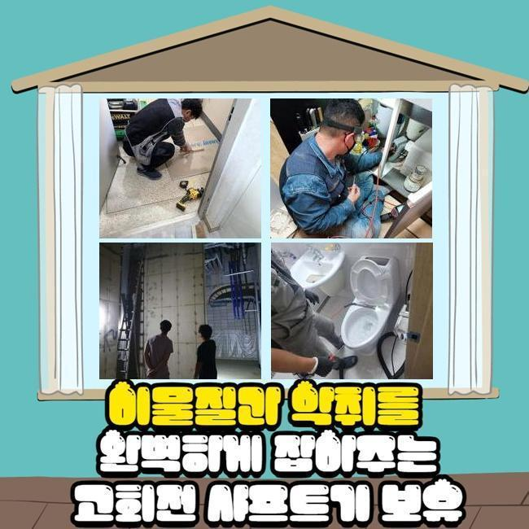
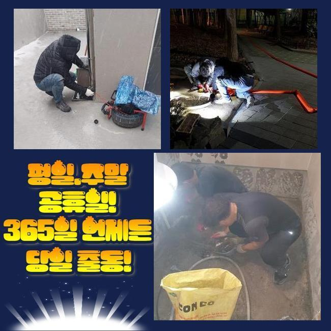
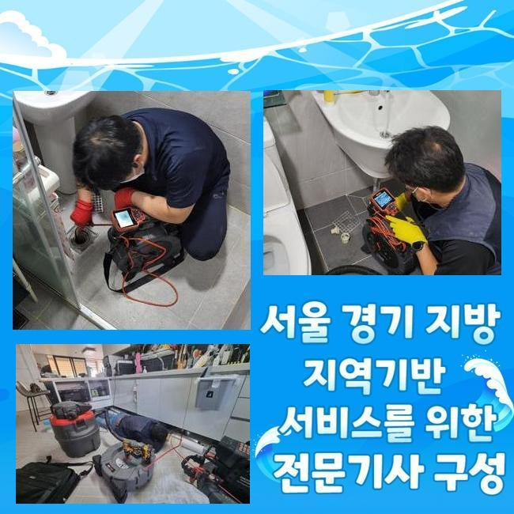
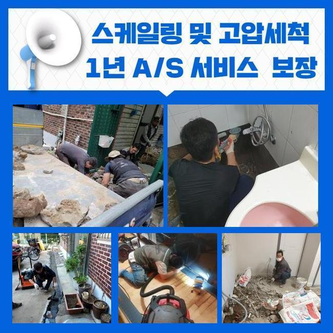
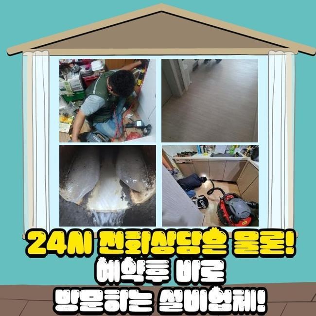
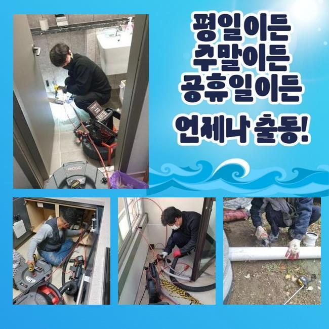
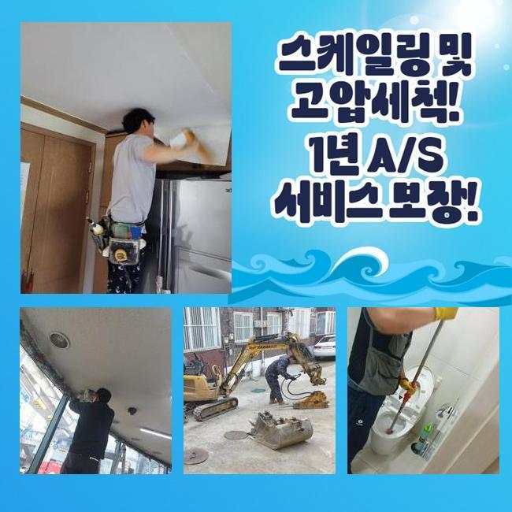

🏠 논곡동화장실하수구역류 대야동 하수관고압세척 설비하는곳
용인 하수구막힘 전문 시공 후기

📋 작업 개요
- 위치: 용인
- 서비스 유형: 하수구막힘, 배관막힘, 역류해결, 뚫는업체, 배관청소, 고압세척, 설비공사, 악취차단
- 작업 일시: 2025. 4. 15. 10:47
- 업체명: 하수구수사대 (010-5615-2118)
🔍 문제 상황
논곡동화장실하수구역류 대야동 하수관고압세척 설비하는곳
아늑해야할 가정안에서 간헐적으로 생겨나는 고장들이 있습니다
대표로 배수구막힘을 알려드릴수 있겠네요
하수관이 차단되면 고약한 냄새가 올라올뿐만 아니라 일상의 고충을 확대시키게 됩니다
배수불가 사태로 인해 세탁기 등을 사용못하고 역류증세까지 보인다면 더욱더 사태는 악화일로로 가게되겠죠
이번 글에선 가정집의 배관막힘이 일어나 여러가지의 장비류를 적용해서 해결한 내용을 설명드릴게요
의뢰인께선 주방시설 근처에 설비된 드럼세탁기 배수관에서 막힘이 생겼다며 저희들에게 의뢰를 진행하셨는데요
차량안에 샤프트기기와 흡입기기 그것에 더하여 내시경cctv까지 갖추고 의뢰인의 댁으로 이동하였습니다
내부로 진입하니 고린내가 가득차 있었으며 역류까지 되는 정황을 관측할수 있었답니다
세탁기가동을 통하여 배수를 시켜보려고 노력했지만 되레 넘쳐버리는 형국이 나타났다 설명하셨죠
세탁한 성분만 역류되는게 아니었으며 여러가지 오물들도 나오는 상황이었죠
특정 건물에선 개수대와 다용도실의 배관이 연결된 케이스도 확인할수 있어요
그부분 역시 진단해 보았어요
막힘문제를 분명하게 간파하기 위하여 의뢰인분에게 주방시설이나 또다른 관로에 막힘이 일어났거나 역류증세는 없었는지를 확인해봤어요

🔎 원인 분석
💡 전문가 진단: 정밀 진단 장비를 사용하여 슬러지의 고착 여부를 판명하고 타격/세척 작업을 실시했습니다.
그저께 배수문제로 인터넷에서 구매한 액상뚫어뻥과 백식초를 부어본적이 있다고 하셨죠
그걸 토대로 분석해본 결과 주방시설쪽의 배수관에 정체의 이유가 있을거란 판단이 들었어요
저희팀이 내방한데의 정체를 정리하려고 증상을 찾아보기로 하였죠
배관카메라를 활용하여 파이프 내측을 검정하기로 결단하였어요
배수문이 막혀 내부에 내시경을 넣지 못할땐 방수기능이 탑재된 청소기기로 관로의 침전물을 제거하게 되죠
이런 과정을 바탕으로 시공시간을 줄일수가 있어요
청소과정에서 크고 작은 오물들과 찌꺼기들이 흡입되었는데요
하지만 해당 업무만으로는 근원적인 막힘동기가 어떠한건지 밝혀내지는 못했답니다
단순하게 석션으로 처치못하는 것들이 많았기 때문에 즉각적으로 내시경cctv를 투입하여서 물막힘이 생겨난 관로를 관측하기로 했습니다
상태를 자세하게 조사하니 해변가에서 자주보는 모래알갱이들이었어요
빨래를 하시다가 방출된 상황일 가망성이 높았죠
손님께 휴가를 최근에 다녀오셨는지 물어보았더니 서해쪽 해변가에 놀러가셨다고 말해주셨어요
우선하여 눈에띄는 찌꺼기들을 정리하고 한층 공격적으로 세정시공을 진행합니다
그러면서 하단부위까지 처치가능한 기계들을 사용하기로 했습니다

🔧 작업 과정
내시경cctv를 쓰는건 막힘이 일어난 동기를 세세하게 조사하고 물막힘을 정리하기 위함이죠
석션기기로 세척을 끝내고 노즐 끝단에 존재하는 내시경을 사용하여 관로 안을 검사하였답니다
후미진 위치까지 진단해보았고 본질적인 막힘원인을 알아낼수 있었습니다
보는바와 같이 물막힘과 역류는 여러가지 변인에 의해 발생될수가 있겠고 정리방법이 간소한것도 아니랍니다
그렇기때문에 전문적인 기계들을 토대로 수선을 이행해야 순탄하게 마무리지을수가 있죠
혹시라도 엉성하게 막힘문제를 정리하려든다면 한층더 정체가 증가할수 있단 것을 기억하시길 부탁드립니다
배수관 군데군데를 배관내시경으로 확인해보고 있어요
관로의 실측값은 예상한것 보다 긴편이고 모양도 다양해서 즉각적으로 파악하기에는 한계점이 있답니다
그러한 정황에선 길고 가는 내시경기기가 큰 임무를 수행할수가 있는거죠
내시경기기를 이용해서 내측을 자세하게 파악해보니 불규칙한 석회성분과 모래성분들이 엉겨붙은 상태였습니다
해당 물질은 적체되기 쉬우며 바위와 같이 굳기 쉽죠
미세한 이물들은 물과 함께 바깥으로 배출되겠으나 동시에 모래알들이 관로로 투입된다면 이 지점처럼 물막힘이 발발할수가 있어요
또한 그런 정황이 누증되면 하수관에 고착화된 노폐물 막이 생겨나기도 합니다
이물의 크기와 양을 기준으로 사용되는 장비들이 달라요
일례로 양말같은 부피가 큰 물질이 있다면 고리를 이용하여 끄집어낸 뒤에 흡입장비로 배수관 내측을 청소해야 됩니다
혹시라도 이러한 과정을 생략하고 플렉스샤프트작업을 곧장 하면 관로안이 더더욱 나빠지기 쉽습니다
이물들이 특정한 공간에 상당량 상존할때는 인위적으로 파쇄하는 업무를 속행하는데요
여긴 작은 모래알과 뒤엉켜있어서 그걸 샤프트기기로 파쇄하고 뚫어내기로 결정한것이죠
금번 장소에서는 전체 이물들을 없앤다음에 내시경기기로 다시금 점검을 하였답니다
그후 잔류하는건 샤프트기기로 깨끗이 소제하고 즉각적으로 물이 잘 내려가는지 확인하였는데요
이상없이 속시원히 빠져나가는걸 인지할수 있었네요
시공과정에서 배출된 폐기물들을 전반적으로 정리한뒤 분리폐기하는걸로 공사를 끝마쳤답니다


✅ 작업 완료
해당하는 막힘현상을 방지하기 위해선 정기적으로 하수구 점검했고 클리닝해야 돼요
주방설비쪽의 하수관에선 기름슬러지가 중앙에 정체하여 역류까지 일으키는 경우가 허다하죠
그러한 사태를 마주한다면 머뭇거리지 마시고 즉시 전문업체를 찾으시는게 합당합니다
일반인이 다룰수있는 범위는 본질적인 해결에 다가서기 어렵고 막힘상황이 한층 심화되는 정황도 자주 볼수 있어요
배관업체의 세척공정은 간단히 일상생활을 정상화시키는걸 넘어서서 위생적인 안전성을 보존하는데도 필수입니다
또 그문제가 지속된다면 타주민에게도 악영향을 가할수 있단걸 인지해주시길 바라요




⚠️ 하수구 배관 막힘 예방 및 관리 가이드
- ✅ 머리카락, 비닐, 물티슈 등 물에 분해되지 않는 이물질은 하수구 유입을 절대 금지해 주세요.
- ✅ 하수구 거름망을 씌우고 모여진 이물질은 주기적으로 쓰레기통에 바로 비워주셔야 합니다.
- ✅ 배관 노후가 심할 경우 이물질이 더 쉽게 걸리므로 주기적인 배관 세척(고압세척 등)을 권장합니다.
- ✅ 작업 후 1년 이내 재발 시 하수구수사대에서 무상 A/S 보증 서비스를 제공합니다.
💡 핵심 정리
- 확실한 장비 작업(내시경 점검 및 샤프트 스케일링)으로 원인을 뿌리 뽑습니다.
- 작업 후 1년 이내에 동일한 부위 재발 시 100% 무상 A/S 서비스를 보장합니다.
- 서울 · 경기 · 인천 전 지역에 24시간 언제든 긴급 출동할 수 있도록 항시 대기 중입니다.
❓ 자주 묻는 질문 (FAQ)
🚨 용인 하수구막힘 문제로 고민이신가요?
정확한 원인 진단과 확실한 시공으로 재발 없는 해결을 약속드립니다.
24시간 긴급 출동 | 서울 · 경기 · 인천 전지역 | 1년 내 재발 시 무상 A/S